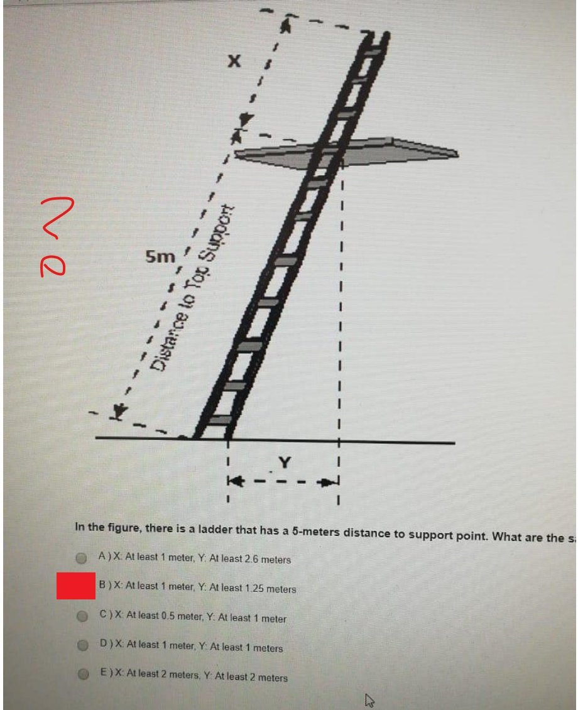

Kaynak: ISG_2_Soru_Cevap.pdf (kırmızı kare/tik/el yazısı notlu ekran fotoğrafları). Ekranda yalnızca bir kopyada examid=1043 görünür; diğerleri aynı sınav/sürüm kabul edildi.
Kırmızı dolu kare öğrencinin seçtiği şıkkı gösterir ("marked"); sol kenardaki kırmızı tik kontrol/onay olarak okundu (answerSource "marked"). Tiksiz ve ? ile işaretli sorularda güven medium/low.
Şık harfleri ekrandaki sıraya göre alındı; aynı soru farklı şık sıralarıyla birkaç kopyada geçiyorsa yalnızca bir kopya yazıldı.
Bir şıkkı işaretlediğinizde doğru cevap görünür. Seçiminiz bu tarayıcıda saklanır.
0 / 37 cevaplandı
1. Which of the following is a false statement about the minimum required air for people?
Doğru cevap: D · Kâğıtta/ekranda işaretli cevap · Seçili şık kırmızı kutuyla kapatılmış (D hizasında); sol kenarda kırmızı tik var. Şıklardaki yazım hataları ekrandaki gibi bırakıldı.
2. Which of the following is not a good suggestion for ladders?
Doğru cevap: D · İşaretli cevapla çelişiyor, gözden geçirin · kâğıtta E işaretli · Kırmızı kutu E hizasında (öğrenci işareti), D ve E yanında kırmızı çizgiler var, tik yok. Ahşap merdivenler boyanmamalı (boya çatlakları gizler), tek kişinin çıkması ise iyi uygulamadır; doğru cevap D.
3. Which of the following is not a symptom of Raynaud's syndrome in hands?
Doğru cevap: D · Kâğıtta/ekranda işaretli cevap · Kırmızı kutu D hizasında, sol kenarda kırmızı tik.
4. Which of the following is not one of the humans factors that lead to slip, trip, and fall?
Doğru cevap: D · Kâğıtta/ekranda işaretli cevap · Kırmızı kutu D hizasında, kırmızı tik.
5. Which of the following is not one of the "major" considerations when lighting a [okunamadı] Hint: Which one is the least important among the below.
Doğru cevap: D · Kâğıtta/ekranda işaretli cevap · Soru metni sağ kenarda kesik. Kırmızı kutu D hizasında; C ve D yanında kırmızı çizgiler var, tik yok.
6. Which axis should we take into account if we want to control vibration hazard? Hint: Whichone is important to know if we want to compare this number with the maximum exposure limt.
Doğru cevap: B · Kâğıtta/ekranda işaretli cevap · Soru üstünde 'Total view / Sensor position' başlıklı oturan manken görseli (titreşim ölçüm ekranı) kısmen görünüyor. Kırmızı kutu B hizasında, kırmızı tik.
7. Which device is used to test the floor slip resistance?
Doğru cevap: B · Kâğıtta/ekranda işaretli cevap · Kırmızı kutu B hizasında, kırmızı tik.
8. Which of the following is true for both heat exhaustion and heat stroke?
Doğru cevap: E · Kâğıtta/ekranda işaretli cevap · Kırmızı kutu E hizasında, kırmızı tik.
9. One worker is 50 meters away from two machines, one emitting 90 dB and the other emitting 95 dB noise. What is the [okunamadı] two machines when the worker is 150 meters away from the machines?
Doğru cevap: B · Kâğıtta/ekranda işaretli cevap · Soru metni sağ kenarda kesik. Hesap: 10·log(10^9+10^9.5)=96.2 dB (50 m); 150 m'de 20·log(3)=9.5 dB azalma, yaklaşık 86.5-86.7 dB. Kırmızı kutu B hizasında; sol kenarda el yazısı '?' işareti var, tik yok.
10. Generators are used to provide the electrical energy of a library in a summer camp. However, generators emit excessive [okunamadı] Which of the following control measures is the least effective solution for solving the noise problem?
Doğru cevap: E · Kâğıtta/ekranda işaretli cevap · Metnin sağ kenarı kesik. Kırmızı kutu E hizasında, kırmızı tik.
11. A hand-held tool in a factory adversely affects workers' health due to its excessive vibration. What is the cheapest solution[okunamadı]
Doğru cevap: D · Kâğıtta/ekranda işaretli cevap · Soru metni sağ kenarda kesik ('cheapest solution...'). Kırmızı kutu D hizasında, kırmızı tik. Şık A'nın yazımı ekrandaki gibi 'Substition'.
12. Which of the following symphtoms indicates that the noise level is very high at the workplace?
Doğru cevap: E · Kâğıtta/ekranda işaretli cevap · Ekranda examid=1043 görünüyor. Şıkların yanındaki kırmızı el yazısı notlar (vib, göz, boğaz ağrısı) öğrenciye ait, metne alınmadı; E şıkkı kırmızı daireyle işaretli, tik var.
13. In the figure, there is a ladder that has a 5-meters distance to support point. What are the s[okunamadı]

Doğru cevap: B · Kâğıtta/ekranda işaretli cevap · Şekil: 5 m'lik merdiven, X = destek noktasının üstünde taşan kısım, Y = merdiven tabanının duvara uzaklığı (1/4 kuralı: 5/4=1.25 m). Soru metni sağ kenarda kesik. Kırmızı kutu B hizasında, sol kenarda el yazısı '?' var.
14. According to the Hawthorne Studies, which of the following is a false statement?
Doğru cevap: A · Kâğıtta/ekranda işaretli cevap · Kırmızı kutu A hizasında, kırmızı tik.
15. Which of the following major indoor air contaminants has a fiber structure?
Doğru cevap: B · Kâğıtta/ekranda işaretli cevap · Kırmızı kutu B hizasında, kırmızı tik; aynı ekranın ikinci kopyası kırmızı karalamayla üstü çizilmiş. Şık yanlarındaki el yazısı notlar (gaz, fiber) metne alınmadı.
16. On an ordinary day, there are two people in the same environment. The body of the first person named "K" reacts to "vasodilation". At the same time, the body of the person "I" reacts to "vasoconstriction". If "K" and "I" hold hands together. Do you expect any heat exchange? If so, which direction will it be?
Doğru cevap: B · Kâğıtta/ekranda işaretli cevap · 30. soru, 3.33 puan; ekranda examid=1043 görünüyor. Kırmızı kutu B hizasında, kırmızı tik. Sağdaki 'Cevap Listesi' kullanılmadı. Vazodilatasyon yapan K'nın eli daha sıcaktır, K ısı verir.
17. Which of the following is not a good practice to solve the lighting problem?
Doğru cevap: E · Kâğıtta/ekranda işaretli cevap · Soru numarası ekranda kesik. Kırmızı kutu E hizasında, A-D yanında kırmızı tikler, sol kenarda büyük kırmızı tik; el yazısı not 'gölgeye sebep olur' (metne alınmadı). Examid=1043 aynı sayfada görünüyor.
18. Which of the following is an effect of exposure to heavy vibration?
Doğru cevap: D · Kâğıtta/ekranda işaretli cevap · Kırmızı kutu D hizasında, kırmızı tik (19. soru). Aynı soru 6. soru olarak şık sırası farklı (A Increased performance ... C Back problems) bir ekranda da var; orada da Back problems işaretli, 5 puan.
19. Which of the following is a false statement about the indoor air quality?
Doğru cevap: A · Kâğıtta/ekranda işaretli cevap · Kırmızı kutu A hizasında, kırmızı tik.
20. If an engine emits 90 dB(A) noise and is 20 meters far from the worker, how many meters should the v orker be far from the engine [okunamadı] expose a noise level that is acceptable by the Turkish Ministry of Family, Labor, and Social Security?
Doğru cevap: D · Kâğıtta/ekranda işaretli cevap · Soru metni sağ kenarda kesik. Hesap: maruziyet sınır değeri 87 dB(A) alınırsa 3 dB düşüş için mesafe 20·√2 = 28.3 m. Kırmızı kutu D hizasında, el yazısı '?' var, tik yok.
21. Which of the following is a result of the Hawthorne Studies?
Doğru cevap: C · Kâğıtta/ekranda işaretli cevap · 9. soru, 5 puan. Kırmızı kutu C hizasında, kırmızı tik. 'not' sözcüğü ekranda altı çizili.
22. Which age-range is expected to feel much colder in a cold environment? Hint: Consider their body core temperatures
Doğru cevap: B · Kâğıtta/ekranda işaretli cevap · Kırmızı kutu B hizasında ve kırmızı tik var; bu tik doğrulama olarak okundu. Ancak ders içeriğinde yaşlıların (65+) çekirdek vücut sıcaklığının düşük olması da öne çıkar; C ile karışma ihtimali var.
23. Which "known to be a human carcinogen" is used in the treating of textiles to make them crease-resistant material?
Doğru cevap: A · Kâğıtta/ekranda işaretli cevap · Kırmızı kutu A hizasında, kırmızı tik.
24. If the amount of illuminance is 8,000 lux for a light bulb standing 1 meter far from a worker, how many [okunamadı]ux would it be if we move the bulb to 4 meters far from the worker?
Doğru cevap: D · Kâğıtta/ekranda işaretli cevap · 12. soru, 5 puan. Ters kare yasası: 8000/16 = 500 lux. Kırmızı kutu D hizasında; el yazısı '?' var, tik yok. Soru metninde 'lux' sözcüğünün başı ('l') okunamadı.
25. Which of the following is the superior (more effective) measure (among others) to control vibration? Hint: Consider the hierarchy of control.
Doğru cevap: B · Kâğıtta/ekranda işaretli cevap · Kırmızı kutu B hizasında, kırmızı tik.
26. Which of the following does not cause the body to lose heat? Hint: Remember the heat balance equation.
Doğru cevap: D · Kâğıtta/ekranda işaretli cevap · Soru numarası kırmızı elips ve '?' ile çevrilmiş (15. soru). Kırmızı kutu D hizasında, tik yok. Metabolizma ısı üretir, ısı kaybettirmez.
27. Which of the following causes molds and other biological contaminants to develop?
Doğru cevap: A · Öğrenci cevap listesine göre · 5. soru, 5 puan. Ekranda D şıkkı seçili görünüyor; A şıkkının üzerine kırmızı kutu ve oval çizilmiş, yanında el yazısı 'moisture and dirt' ve sol kenarda kırmızı tik var. El yazısı nota göre cevap A (Moisture); 'Toxicity' küften sorumlu olmadığı için D de olamaz.
28. Construction workers are often exposed to high-level vibration, which causes some health problems. Which of the following is not one of those health problems?
Doğru cevap: B · Kâğıtta/ekranda işaretli cevap · 11. soru, 5 puan. Kırmızı kutu B hizasında; A, C, D, E yanında kırmızı tikler; el yazısı not 'increase olcak' (kan basıncı artar). Yazım hataları ('cellsmay', 'timemay') ekrandaki gibi bırakıldı.
29. Which of the following is a false statement?
Doğru cevap: D · Kâğıtta/ekranda işaretli cevap · 7. soru ('false' sözcüğünün altı çizili). Kırmızı kutu D hizasında; A-C yanında tikler; el yazısı notlar ('rods to cones olcak', 'rgb?') metne alınmadı. Köpeklerde çubuk/koni oranı insana göre çok daha yüksektir (koni/çubuk oranı düşüktür).
30. Which of the following is a false statement?
Doğru cevap: D · Kâğıtta/ekranda işaretli cevap · 4. soru, 5 puan ('false' altı çizili). Kırmızı kutu D hizasında, D yanında '?' ve diğer şıklarda tikler var. Aynı numaralı (4.) başka bir soru da aynı sayfada.
31. Why can't we use regular chemical occupational exposure limits for indoor air contaminants?
I. Occupational exposure limits use dose-response data which shows the health effects of repeated exposure to one specific chemical.
II. Similar data is not available for long-term, low-level exposures to a combination of contaminants as is the case for indoor air quality problems.
III. Currently, there is not enough information available to predict the effects of exposure to several potentially harmful agents at the same time.
Doğru cevap: A · Kâğıtta/ekranda işaretli cevap · 4. soru, 5 puan. Kırmızı kutu A hizasında, kırmızı tik.
32. The most effective way to avoid hearing loss at work is to .... .
Doğru cevap: B · İşaretli cevapla çelişiyor, gözden geçirin · kâğıtta C işaretli · Soru numarası ekranda kesik. Kırmızı kutu C hizasında; C ve E yanında kırmızı çizgiler var, tik yok. Kontrol hiyerarşisine göre mühendislik/idari kontrollerle izleme ve azaltma en etkili yoldur (B).
33. Which device (instrument) is used to measure the level of vibration and what is the unit of vibration?
Doğru cevap: A · Öğrenci cevap listesine göre · 3. soru. Ekranda D şıkkı seçili radyo olarak görünüyor; A şıkkı kırmızı kutuyla kapatılmış ve sol kenarda kırmızı tik var. Titreşim ivmeölçerle (m/s²) ölçülür.
34. Which of the following is a false statement?
Doğru cevap: B · Kâğıtta/ekranda işaretli cevap · 4. soru ('false' altı çizili). Kırmızı kutu B hizasında. B açıkça ters yazılmış (sıcak çarpmasında çekirdek sıcaklık çok yüksek); C şıkkı da tartışmalı olabilir.
35. Which of the following health condition is reversible? Hint: It is asking which one is not permanent damage.
Doğru cevap: B · Kâğıtta/ekranda işaretli cevap · emin değiliz · 5. soru. Kırmızı kutu B hizasında; tik yok. Gürültüye bağlı geçici eşik kayması/kulak çınlaması geri dönüşlü olabilir; diğer şıklarda kalıcı hasar daha belirgin. Emin değilim.
36. If there are three engines and each emits 80 dB(A) noise when they run, what would be the total noise level in dB(A) when all three run?
Doğru cevap: C · Kâğıtta/ekranda işaretli cevap · Soru numarası ekranda kesik. 80 + 10·log10(3) = 84.77 dB(A). Kırmızı kutu C hizasında.
37. Which of the following is not a response of our body to cold?
Doğru cevap: E · İşaretli cevapla çelişiyor, gözden geçirin · kâğıtta A işaretli · 2. soru, 5 puan ('not' altı çizili). Ekranda A radyosu seçili; D şıkkı kırmızı kutuyla kapatılmış (tik yok). Soğuğa tepki piloereksiyondur (tüylerin dikleşmesi); 'pilorelaxation' bir tepki değildir (E). Şık E ekranda 'Pilorelaxation' olarak okundu.